Deuren op maat,
gemaakt om te blijven.
Elke deur wordt volledig naar uw wensen ontworpen en met de hand vervaardigd — van eerste schets tot montage.
"{{ slide.quote }}"
Zes producten. Eindeloos maatwerk.
We houden het assortiment klein, zodat elk model tot in de puntjes is uitgewerkt.


"Na 2 jaar verbouwen de eerste vakman die zijn afspraken volledig nakomt, goed communiceert, alles netjes op tijd levert, niets beschadigt bij het plaatsen en bovendien een prachtige taatsdeur heeft gemaakt volledig naar onze wensen. Top!"
Enkele deur
Onze meest gekozen oplossing: één vast stalen kader, één beweegbaar vlak, en een groot aantal keuzes die samen bepalen hoe hij eruitziet en aanvoelt.
Bekijk enkele deur
Enkele deur met vast paneel
Wanneer een enkele deur de opening niet vult, voegen we een vast paneel toe: hetzelfde profiel en dezelfde afwerking, zonder mechanisme.
Bekijk met vast paneelDubbele deur
Voor brede doorgangen: twee identieke deurvlakken die samen open- en dichtgaan, symmetrisch of ieder in eigen tempo.
Bekijk dubbele deurDubbele deur met vast paneel
Voor de breedste openingen: twee bewegende deurvlakken, aangevuld met een vast paneel dat de volledige breedte afmaakt.
Bekijk met vast paneelVast paneel
Ons eenvoudigste product: hetzelfde stalen profiel en glas als onze deuren, zonder mechanisme — puur voor licht en indeling.
Bekijk vast paneelComplete scheidingswand
Een modulaire wand van stalen profielen en glas: schuivende panelen voor doorgang, gecombineerd met vaste panelen waar geen doorgang nodig is.
Bekijk scheidingswand
Gemaakt in het atelier, niet van de plank.
Staal wordt op maat gezaagd, gelast en met de hand nagewerkt tot elke naad recht en glad is. Pas daarna gaat een deur in de poedercoating — in een kleur die specifiek voor uw project wordt gemengd.
Dat proces kost meer tijd dan een deur van de plank. Het resultaat is een deur die decennia meegaat, in een afwerking die nergens anders te vinden is.
Wat klanten zeggen
"{{ review.quote }}"
"{{ review.quote }}"
Stel uw eigen deur samen.
Kies product, mechanisme, zijpanelen, vlakverdeling, afmeting, kleur en glas. Daarna controleert u het overzicht en vraagt u vrijblijvend aan — of u stelt de deur samen in een adviesgesprek.
Klaar om te beginnen?
Vraag een vrijblijvende offerte aan, of plan een adviesgesprek in het atelier.